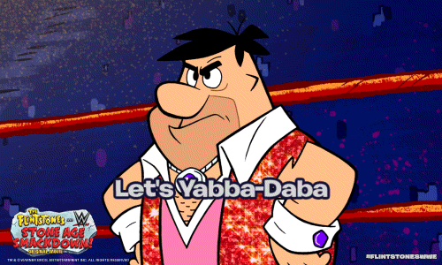
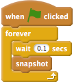

gifblocks - Scratch projects → animated GIFs
Overview
I love animated GIFs, and I'm sure you do as well: they're a fantastic way to share snippets of video on the Internet.
This website lets you turn your Scratch projects into a GIF. An animated GIF is actually just a series of still images, or frames, which get played in order really fast. gifblocks lets you take snapshots of the Scratch Stage and use them as frames.
For technical material related to this project, see here. To make GIFs, read on!

Instructions
- Scroll down, and make a Scratch project using the editor below! You can
even import an
sb2file from thefile
menu. - Use the
snapshotblock, under theEvents
palette, to take snapshots of the stage. Each such snapshot will become a frame in your GIF. For example, to take a snapshot of whatever's on the stage ten times per second, you can use the following script:
(Note that gifblocks arranges the frames inreal-time
, as opposed to playing them back at a constant rate. So, if you wait ten seconds between snapshots, then the GIF frames will change every ten seconds.) - When you are done collecting all your snapshots, scroll back up and
click on the
Submit
button. Your GIF should appear inside the rectangle. Please note that this step might take a long time depending on how many frames you have! - To save your GIF to your computer, you can right-click on it and select
the
save
option. Alternatively, you might be able to drag it to your desktop. - To erase all the current frames and start over, just press the
Clear
button.
(0 frames so far)